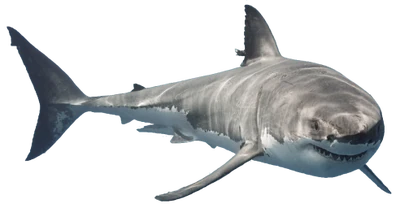

Great White
The largest
predator
fish in the world
The Great White Shark
The great white shark is the largest predator fish in
the world. It is known for its
size,
speed,
and
strength.
The great white shark is a fierce predator that feeds on
a variety of marine animals, including fish, seals, and
other sharks. It is found in coastal waters around the
world and is known for its distinctive appearance and
aggressive behavior.

The Great White Shark has a large, torpedo-shaped body
with a pointed snout and a crescent-shaped tail. It has
a gray back and a white underside, which helps it blend
in with the ocean's surface when viewed from above or
below. The Great White Shark has several rows of sharp,
serrated teeth that are used for catching and eating
prey. It is an apex predator, meaning that it is at the
top of the food chain and has no natural predators.
| Great White Shark Stats | |
|---|---|
| Scientific Name | Carcharodon carcharias |
| Average Length | 15-20 feet |
| Average Weight | 2,200-5,000 pounds |
| Average Lifespan | 30-40 years |
| Habitat | Coastal waters worldwide |
| Diet | Fish, seals, other sharks |
| Conservation Status | Vulnerable |